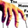
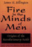

Paul and Phillip D. Collins
Home | Commentary | Paul and Phillip D. Collins
Authors
The Last Wake Up Call
It comes as little surprise that Litvinenko's allegations would create so much "irritation" for the Russian authorities. They suggest that the "fall of communism" was one of the greatest deceptions of the last century. All of the Russian "liberalization" initiatives seem to have been mere cosmetic alterations with no sincerity behind them at all. This move has been quite effective. It has caused the Western elite (which are just as criminal and conspiratorial as the Russian elite) to believe that Russia had ceased to be a major competitor in the crusade to establish a New World Order.
MJ-12: The Technocratic Thread
Preoccupied with aliens and flying saucers, Ufologists overlook the technocratic implications of the MJ-12 documents. [...] It is the thesis of this essay that the enshrinement of the technocratic paradigm was the intended corollary underlying the revelation of Majestic 12 documents. The specific variety of Technocracy towards which the UFO community is gravitating is the scientistic theocratic order of a sociocracy.
In Bed with the Enemy
A key character connecting the government to the terrorist network is Grover Norquist. Norquist is a GOP/Bush operative who helped the President gain the support of Islamic people and organizations here in the United States. The Nation magazine referred to Norquist as "'Field Marshal of the Bush Plan" (Gitell, no pagination). However, Norquist can be characterized as much more than just a Bush supporter. Grover Norquist is best described as the tie between the Administration and Islamists.
Nothing Beyond the Flesh: The Theocracy of Prima Materia
The occult theocracies of antiquity had found a way of perpetuating themselves. The Mystery priesthoods of ancient Babylon and Egypt found their modern counterparts in the revolutionary ideologues of contemporary totalitarianism. Out of the Promethean movement would spring Soviet Russia and Nazi Germany, two technocratic regimes premised upon the Gnostic myth of Darwinism.
Unholy Matrimony: The Tie Between the Cult of Intelligence and the Cult of Oligarchy
What is being examined here is an unholy union. The first spouse is the Cult of Intelligence, which is the CIA. Despite its fierce secrecy, many, if not all Americans, are aware of this Cult's existence. After all, it has a definite geographical location, which is Langley, Virginia. The major news media and the government also acknowledge its existence. On the other hand, the Cult of Oligarchy, which is the power elite, is not so easily detected.
Lebanon: Victim of the Global Democratic Revolution
Who's to blame for the current crisis in the Middle East? Point the accusatory finger at the neoconservatives and their concept of a global democratic revolution. The neoconservatives are a faction of the elite that are essentially running the Bush Administration. They are Trotskyites who have blended their leftist philosophy with Leo Straussian fascist additives and technocratic concepts to form what can be described as a new Jacobinism.
The Ruling Class-Sponsored Race War and the Balkanization of America Part Two: Is California Ground Zero?
With two racist demagogues planted high up in Californian politics, the stage has been set for a race war. When the time is right, both Schwarzenegger and Villaraigosa will be in a position to mobilize the two racist camps for the fighting. All that is needed now is a pretext.
Traversing the Moral Rubicon
The mantra of "Do what thou wilt" is continually reiterated by academia, the media, and pop culture. With each successive generation, humanity continues its inexorable drift towards amorality. Of course, this drift serves the interests of the ruling class.
The Social Scientific Dictatorship: The Role of the Social Sciences in the Mechanization of Mankind
Skinner presented his psychologically engineered Utopia as a roman a' clef entitled Walden Two. Characterizing Walden Two as an innocuous fiction, Skinner stated: "The 'behavioral engineering' I had so frequently mentioned in the book was, at the time, little more than science fiction" (vi). Yet, "behavioral conditioning" was much more than science fiction to dark forces with dark intentions.
Cultivating Criminality: The Centrality of Deviance To The Scientific Dictatorship
[The] gradual subversion of the nation-state system is integral to the power elite's plan to establish a socialist totalitarian world government. Yet, the criminal culture resulting from this plan is hardly some unintended byproduct. MS-13 and other criminal enterprises produced by globalization are integral to the statist blueprint of a global scientific dictatorship.
The Veil of Materialism
In addition to facilitating the rise of a new occult theocracy, materialism has also contributed to the enormous volumes of bloodshed witnessed by the 20th century. Arguably, contemporary regimes premised upon dialectical materialism have murdered far more people than any traditional theocracy premised upon a theistic faith.
Luciferianism: The Religion of Apotheosis
 Luciferianism
constitutes the nucleus of the ruling class religion. While there
are definitely political and economic rationales for elite
criminality, Luciferianism can account for the longevity of many of
the oligarchs' projects. Many of the longest and most brutal human
endeavors have been underpinned by some form of religious zealotry.
The Crusades testify to this historical fact. Likewise, the power
elite's ongoing campaign to establish a socialist totalitarian
global government has Luciferianism to thank for both its longevity
and frequently violent character. In the mind of the modern
oligarch, Luciferianism provides religious legitimacy for otherwise
morally questionable plans.
Luciferianism
constitutes the nucleus of the ruling class religion. While there
are definitely political and economic rationales for elite
criminality, Luciferianism can account for the longevity of many of
the oligarchs' projects. Many of the longest and most brutal human
endeavors have been underpinned by some form of religious zealotry.
The Crusades testify to this historical fact. Likewise, the power
elite's ongoing campaign to establish a socialist totalitarian
global government has Luciferianism to thank for both its longevity
and frequently violent character. In the mind of the modern
oligarch, Luciferianism provides religious legitimacy for otherwise
morally questionable plans.
Re-establishing the Temple: Reconciling the Body and Soul
In the present cultural milieu, which is experiencing a resurgence of Gnosticism, one of Christianity's primary goals should be to re-establish the human body as an object of reverence ... Otherwise, Western civilization shall become a culture of death.
The Ruling Class-Sponsored Race War and the Balkanization of America
We contend that there is a conspiracy to radicalize the Minutemen project, subvert efforts to restore America's border integrity, and manufacture a politically expedient race war. This conspiracy is being financed and coordinated by factions of the power elite, which have a vested interest in the destruction of America's national sovereignty and the establishment of a one-world government.
Perpetual War for Perpetual Evolution Part Three
In hopes of facilitating the purported evolutionary ascent of man, the power elite has instigated war after war. In this installment, we shall take brief glimpse at some of the hidden alchemists behind World War II.
Neocon Court Coup and the Politics of Disaster Revisited
Defense Secretary Donald Rumsfeld has now entered the picture, ready to step up domestic militarization. The changes he will suggest to the President may allow the government to use natural disasters as a pretext for tearing down longtime bulwark to tyranny: the 1878 Posse Comitatus Act.
Katrina and the Politics of Disaster
"'It is FEMA who is really calling the shots and setting priorities here,' General Strock said." [...] Indeed, FEMA is calling all the shots ... In the event of a larger crisis, the agency's powers could be further augmented by Executive Order 11051.
Legal Land Theft and the Supreme Court
If property can be taken away from the people for private economic development, then that means the government is giving preferential treatment to private forces. Those private forces would be correctly labeled an aristocracy. The Supreme Court has been prostituted out to the Power Elite for the purpose of transforming the Republic into an oligarchy.
Domesticating the Anthropomorphic Apes
Like Bert Walker's "Human Zoo" of 1904, the recent exhibit at the London Zoo is an outward expression of the power elite's supremacy doctrine. It originated with the occult pantheism of the ancient Mystery Religions and was scientifically dignified by racialist ideologue Charles Darwin. While this supremacy doctrine was initially racialist in character, it has expanded its bestial view of man to encompass all those outside the power elite's insular clique.
Perpetual War for Perpetual Evolution Part Two
[...] the Masonic Lodge had played an integral role in the development and promulgation of Darwinism. During its popularization, evolutionary theory had been extended into the realm of political science. Evidently, the hidden alchemists of war believed the League to be the next step in humanity's political evolution.
Perpetual War for Perpetual Evolution Part One
As I have established in previous articles, Darwinism was but one more permutation of an ancient occult doctrine of transformism. This occult belief originated in Mesopotamia roughly 6000 years ago and was actively promulgated by the various Mystery cults. It also comprises the ruling class religion of today. At the heart of the doctrine is the claim that man is gradually evolving towards apotheosis. Throughout the years, the religion of apotheosized man has recycled itself under numerous appellations. Darwinism was but one more installment in this seamless ideational continuum. In this series, I am going to examine one of the chief facilitators of man's purported evolution: war.
Nietzsche: A Precursor to Hitler?
I recently took a college course in the history of philosophy. The instructor, who happens to be an extremely intelligent woman, was going to examine Foucault. I was eager to study Foucault and seized the opportunity. His Marxist proclivities aside, Foucault's views concerning the carceral system were certainly of merit and valuable to my research. Yet, there was another philosopher on the menu. In the halls of orthodox academia, his reputation precedes him. His name is Friedrich Nietzsche.
The Global Skinner Box
For Skinner and those who carry on his tradition, humanity is little more than a lab animal to be conditioned and controlled. This authoritarian mentality becomes all the more evident when Skinner states: "... Russia after fifty years is not a model we wish to emulate. China may be closer to the solutions I have been talking about, but a Communist revolution in America is hard to imagine" (Walden Two xv). In other words, the communism of mass murdering Red China is preferable to the Russian variety of communism. Why? The Russian communists did not go far enough.
The New Malleus Maleficarum: The DSM Reconsidered
[...] the DSM can be seen as merely the modern incarnation of The Malleus Maleficarum. Just as the theocracy of 1486 employed The Malleus Maleficarum against religious "heretics" of the middle ages, the DSM is employed by the dominant theocracy of materialism against cognitive dissenters today.
The Gnostic Myth of Darwinism and Socio-political Utopianism
With the publication of The Da Vinci Code and the release of the Matrix films, Gnosticism has experienced a cultural revival in the West. Is the rise of Gnostic thinking simply a fleeting trend, like the outrageous clothing that Britney Spears or Christina Aguilera wear one day and never don again? Perhaps. Yet, it is interesting to note that the popularization of Darwinian evolution preceded Gnosticism's ascendancy in the West.
Neoconservativism: The Cult of Techno-Socialism
The actions taken by the Bush Administration in the aftermath of 9-11 have caused muckrakers from across the political spectrum to take a closer look at the hidden hand guiding the current President. Researchers, both left and right, have identified the same enemy: a faction of the elite known as neoconservatives. The exposure has led to mounting opposition against the neoconservative agenda from numerous grassroots activists.
Engineering Evolution: The Alchemy of Eugenics
In the dark past of human civilization, the ruling class controlled humanity largely through religious institutions and mysticism. However, the turn of the century witnessed the epistemic transformation of the elite's religious power structure into a "scientific dictatorship." The history and background of this "scientific dictatorship" is a conspiracy, created and micro-managed through the historical tide of Darwinism, which has its foundations in Freemasonry. In this article, we shall examine the evolutionary alchemy of eugenics, from Margaret Sanger's Planned Parenthood to William Sims Bainbridge's Transhumanism.
The Semiotic Deception of September 11th
Replete with esoteric symbols, conspiracy research certainly warrants semiotic examination. Although fraught with historical flaws and theological distortions, The Da Vinci Code by Dan Brown acknowledges the value of semiotics in studying the conspiratorial world. In fact, the novel’s central character is a semiotician specializing in symbology. Evidently, Brown recognized the potential of semiotics in analyzing the coded messages of cabals occupying history’s darker corners. September 11th is one such corner that is worth semiotic analysis.
Archived In: New Age
Manipulating Matter: The Scientific Dictatorship as a Project in the Reconfiguration of Reality
In the article entitled "The Ascendancy of the Scientific Dictatorship", we examined the transmogrification of the elite's religious power structure into a technocratic oligarchy legitimized predominantly by science. The history and background of this "scientific dictatorship" is a conspiracy, created and micro-managed by the historical tide of Darwinism, which has its foundations in Freemasonry. In this article, we shall examine the "scientific dictatorship" as an enormous project in the re-sculpting of reality itself.
Fiction as a Precursor to Fact: Sci-fi 'Predictive Programming' and the Emergent World Religion
The new Mason was no longer an architect of freestone. Instead, he was an architect of the technocratic Utopia mandated by Bacon's New Atlantis. His god was Man himself, an emergent deity sculpted by the Kabbalistic golem of nature through the occult process of "becoming." Of course, this concept would later be disseminated on the popular level as Darwinism and the world would call it "evolution."
Archived In: New World Order
Conquest by Convergence: The Case Against Elite Convergence
Among one of the most absurd and irrational myths circulated by the orthodoxy of political science is the concept of elite convergence. According to this hopelessly flawed view, the problems of injustice and inequity that destabilize societal order are remedied when opposing factions of the ruling class arrive at an agreement. Hypothetically, this coalitional realignment within the elite will deter further deviation from democratic norms. In harmonious consensus, the elite paternally guide the ignorant sheep of the lower classes into the future.
The Hidden Face of Terrorism
In our modern world, discomforting truths are usually discarded in favour of fictions. One such fiction is the idea that terrorists are disenfranchised dissidents who independently generate the wealth and resources necessary for their heinous acts.
The Ascendancy of the Scientific Dictatorship (Part One)
As antiquity gave way to modern history, the religious power structure shifted to an autocracy of the knowable, or a 'scientific dictatorship.' Subtly and swiftly, the ruling class seized control of science and used it as an 'epistemological weapon' against the masses. This article will show that the history and background of this 'scientific dictatorship' is a conspiracy, created and micro-managed by the historical tide of Darwinism, which has its foundations in Freemasonry.
The Ascendancy of the Scientific Dictatorship (Part Two)
In part two of this article, we trace the thread of the concept of 'survival of the fittest' from Condorcet to Malthus, to Spencer, to Wallace and to Darwin; elucidate the 'predictive programming' contained in science fiction novels; and illuminate the extraterrestrial connection, specifically the Freemasonic import of Sirius, the Dog Star.
Radio Interviews
The Byte Show | Peering Into Darkness | Changesurfer Radio | From the Grassy Knoll | A Closer Look | Zeph Daniels Show | Frankly Speaking Radio | Red Ice Radio | Intolerant Talk Radio with Cliff Scott
The Byte Show
The Last Wake Up Call | The Collins Brothers
mp3: [1]
2 December 2006: MJ 12 The Technocratic Thread | the Collins Brothers
mp3: [1 | 2 | 3]
25 November 2006: The Ted Haggard Affair And The CNP | the Collins Brothers
mp3: [1 | 2]
14 October 2006: Nothing Beyond The Flesh - The Theocracy of Prima Materia | Paul Collins.
mp3: [1 | 2]
7 October 2006: Unholy Matrimony: The Tie Between the Cult of Intelligence
and the Cult of Oligarchy | Paul Collins.
mp3: [1 | 2]
1 October 2006: In Bed with the Enemy | Paul Collins. "There are criminal elements within the U.S. government that are guilty of protecting and shepherding the very Islamofascists they claim to be fighting."
mp3: [1 | 2]
24 June 2006: Phillip Collins discusses the concept of technocracy, a form of control by the elite.
mp3: [1 | 2]
Phillip Collins discloses how the criminal elite hijacked science and transformed it into a weapon against the masses...
mp3: [1 | 2]
Paul Collins on the Hidden Face of Terrorism
mp3: [1 | 2]
Phillip and Paul Collins on Oil and Population Control
mp3: [1]
Darwinism And The Rise Of Gnosticism. Phillip states: "Evolutionism is in truth a metaphysical doctrine decked out in scientific garb. In other words, it is a scientistic myth... both the Nazis and the communists exhibited a religious adherence to the Gnostic myth of Darwinism."
mp3: [1 | 2]
Phillip D. Collins - The Culture Of Death.
mp3: [1 | 2]
Red Ice Radio
November 12, 2006:
We have Phillip D. Collins with us this Sunday. He is the co-author to
The Ascendancy of the Scientific Dictatorship. We begin to talk
about "the Scientific Dictatorship", and Phillip gives us an excellent
and thorough presentation on the philosophical aspects of this
concept. We also talk about the connection to Darwin(ism) and the
theory of evolution. This is a very informative interview that you
don't want to miss!
mp3: [1]
Peering Into Darkness on RBN
"We're pleased to welcome back Paul David Collins and Phillip Darrell
Collins, brothers and authors of The Ascendancy of the Scientific Dictatorship: An Examination of Epistemic Autocracy, From the 19th to
the 21st Century. Their work documents the establishment of an
education system that has hijacked science and turned it into a weapon
against the masses."
mp3: [1]
The Coming Race War:
mp3: [1 | 2 | 3]
The Scientific Dictatorship:
mp3: [1]
Changesurfer Radio
The Illuminati and the Scientific Conspiracy
Phil Collins is a Christian conspiracist who thinks the Bush
administration is part of the ancient, global oligarchical conspiracy
to establish socialist world government. He writes at
conspiracyarchive.com and is author of The Ascendancy of the Scientific
Dictatorship. mp3: [1]
Vyzygoth's From The Grassy Knoll
December 28-29 2006
The Brothers Collins: mp3: [1 | 2]
December 20th, 2006
The Brothers Collins on MJ-12 and Report from Iron Mountain: mp3: [1]
November 21, 2006
The Brothers Collins on Haggard, the CNP, and more. mp3: [1]
September 13th, 2006
Phillip D. and Paul Collins on Jacobinism and its demonseed,
Neoconservatism.
Dictatorship: mp3: [1]
A Closer Look
June 15, 2006
Michael Corbin interviews Phillip D. Collins on The Ascendancy of the
Scientific Dictatorship.
Real Player: [1
| 2 | 3]
April 11, 2006
Michael interviews Phillip Collins on his article for the ACL Report on
Cultivating Criminality: The Centrality of Deviance to The Scientific
Dictatorship. This discussion is very interesting.
Real Player: [1
| 2]
March 1, 2006
Michael interviews Paul and Phillip D. Collins on the myth of Peak Oil,
and who the characters are behind the myth, and how it is being used
for purposes of control.
Real Player: [1
| 2]
March 20, 2006
Michael Corbin interviews Paul D. Collins on the infiltration of racism
in the anti-illegal immigration movement.
Real Player: [1
| 2]
January 6, 2006
Michael Corbin interviews Phillip D. Collins, author and commentator.
We discuss his article on Manipulation of Matter.
Windows Media: [1
| 2 | 3]
January 20, 2006
Michael Corbin interviews Phillip D. Collins on his article on
Luciferianism.
Real Player: [1]
Zeph Daniels Show
Collins Brothers In A Very Energetic Talk About The Ufo Hoax And The Will To Enslave People Through Mind Control And Social Engineering - The Technocracy... .pls (Playlist): [1]
Listen As Phillip And Paul Join Z To Give Historical Context On Todays Events. .pls (Playlist): [1 | 2]
August 31st, 2006:
Phillip Collins of the Collins brothers -- an amazing talk about the
mental, philosophical, and spiritually religio-scientistic
conspiracy... Power packed with information by Phillip Collins.
ASX (Advanced Streaming Format): [1]
September 3rd, 2006:
Fascinating Discussion With Phillip And Paul Collins...The Ascendancy
Of The Scientific Dictatorship... Root Causes Of The Never Ending War
Of George W Bush And His Neo-Cons!
ASX (Advanced Streaming Format): [1]
Frank Whalen
September 5th, 2006:
Phillip D. Collins, co-author of the book, "The Ascendancy of the
Scientific Dictatorship: An Examination of Epistemic Autocracy, from
the 19th to the 21st Century" will discuss the social engineering
programs he has researched so thoroughly.
mp3: [1 | 2]
Intolerant Radio With Cliff Scott
31 December 2006: Phillip & Paul Collins
Windows Media: [1
10 December 2006: Phillip & Paul Collins
Windows Media: [1
3 December 2006: Phillip & Paul Collins
Windows Media: [1 | 2]
About the Authors
Phillip D. Collins acted as the editor for The Hidden Face of Terrorism. He co-authored the book The Ascendancy of the Scientific Dictatorship, which is available at www.amazon.com. It is also available as an E-book at www.4acloserlook.com. Phillip has also written articles for Paranoia Magazine, MKzine, News With Views, B.I.P.E.D.: The Official Website of Darwinian Dissent and Conspiracy Archive. He has also been interviewed on several radio programs, including A Closer Look, Peering Into Darkness, From the Grassy Knoll, Frankly Speaking, the ByteShow, and Sphinx Radio.
In 1999, Phillip earned an Associate degree of Arts and Science. In 2006, he earned a bachelor's degree with a major in communication studies and liberal studies along with a minor in philosophy. During the course of his seven-year college career, Phillip has studied philosophy, religion, political science, semiotics, journalism, theatre, and classic literature. He recently completed a collection of short stories, poetry, and prose entitled Expansive Thoughts. Readers can learn more about it at www.expansivethoughts.com.
Paul D. Collins has studied suppressed history and the shadowy undercurrents of world political dynamics for roughly eleven years. In 1999, he earned his Associate of Arts and Science degree. In 2006, he completed his bachelor's degree with a major in liberal studies and a minor political science. Paul has authored another book entitled The Hidden Face of Terrorism: The Dark Side of Social Engineering, From Antiquity to September 11. Published in November 2002, the book is available online from www.1stbooks.com, barnesandnoble.com, and also amazon.com. It can be purchased as an e-book (ISBN 1-4033-6798-1) or in paperback format (ISBN 1-4033-6799-X). Paul also co-authored The Ascendancy of the Scientific Dictatorship.
"All propaganda has to be popular and has to adapt its spiritual level to the perception of the least intelligent of those towards whom it intends to direct itself."
Adolf Hitler, Mein Kampf ("My Struggle"), Vol. I
"Language is a field of battle, the media is the artillery, and vocabulary is the ammunition. The NWO has taken the field by storm, and is proceeding with coordinated attacks on several fronts, using all the latest high-tech vocabulary ammunition. They've laid a bed of land mines that cripple us when we try to stand on them: 'liberalism', conservatism', prosperity', 'democracy'."
Richard Moore, Doublespeak
"The true equation is 'democracy' = government by world financiers...The main mark of modern governments is that we do not know who governs, de facto any more than de jure. We see the politician and not his backer; still less the backer of the backer; or what is most important of all, the banker of the backer. Enthroned above all, in a manner without parallel in all past, is the veiled prophet of finance, swaying all men living by a sort of magic, and delivering oracles in a language not understanded [sic] of the people."
J.R.R. Tolkien, Candour Magazine, 13 July 1956, p. 12
"...The age of nations must end... The governments of the nations have decided to order their separate sovereignties into one government to which they surrender their arms."
Preliminary Draft of a World Constitution, 1948, introduced in Congress by Senator Glen Taylor in 1950
The Ascendancy of the Scientific Dictatorship, by Paul & Phillip Collins
Memoirs Illustrating the History of Jacobinism, by Abbe Barruel
Fire in the Minds of Men: Origins of the Revolutionary Faith, by James H. Billington
World Revolution: The Plot Against Civilization, by Nesta H. Webster (6th revised edition)
America's Secret Establishment: An Introduction to the Order of Skull & Bones, by Antony C. Sutton
Secret Societies and Subversive Movements, by Nesta H. Webster